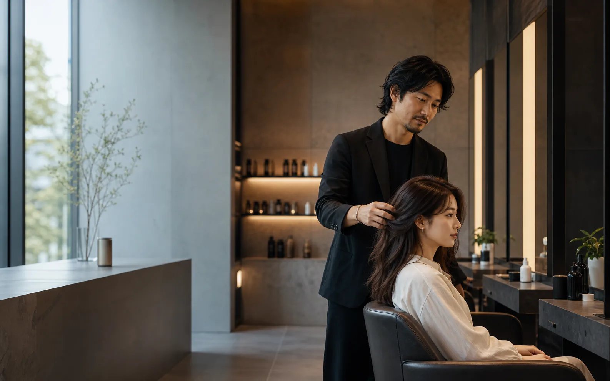
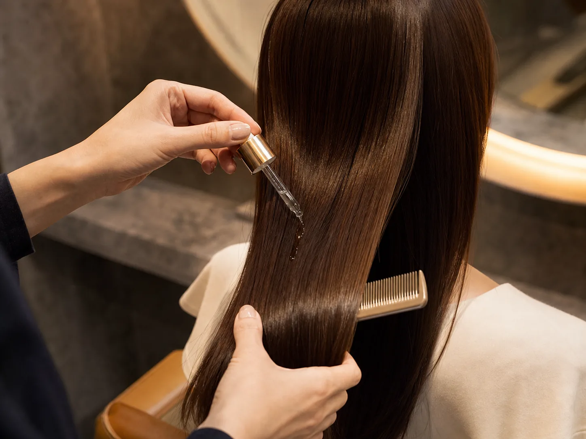

髪の広がり、色落ち、朝のセット時間まで予約前に整理。
Private hair atelier / reservation demo
初回の不安まで、予約前に整える。
LUMINAは、髪質・悩み・来店目的を予約前にヒアリングし、当日のカウンセリングを深くする美容サロンHPデモです。
- 15min
- 初回カウンセリング枠
- 3step
- 悩みからメニュー提案
- 1:1
- 担当者確認へ引き継ぎ

Concept
似合う髪は、施術前の理解で決まる。
写真の雰囲気だけで予約させず、髪質、履歴、生活時間、悩みを先に受け取る構成にしています。スタッフは来店前から提案の準備ができ、お客様は初回でも安心して予約できます。

初回向け、メンテナンス、集中ケアの候補を自然に提示。
日時と希望内容をスタッフが確認できる形にまとめる。
Lead stylist
髪質広がり、クセ、乾燥感
履歴カラー、パーマ、ブリーチ
生活朝のセット時間、職場の印象
担当者の顔が見えるから、初回予約が軽くなる。
スタイリスト紹介は実績の羅列ではなく、初回の相談で何を見ているかを伝える構成にしています。予約前チャットで内容を集め、担当者が確認しやすい状態に整えます。
Reservation
空き枠を見せて、最後はチャットで受ける。
ページ下部に汎用フォームを置かず、今週の空き枠と予約前確認を見せます。お客様は「何を送ればいいか」が分かった状態で相談できます。
Before reservation
相談時に聞くことは3つだけ
- 髪の悩み、理想の雰囲気
- カラー、パーマ、ブリーチ履歴
- 希望日時とメニュー未定かどうか
Staff handoff
チャットで受けた内容を、担当者の確認メモへ。
初回でも「何を相談すればいいか」が分かる状態にして、予約前の離脱を減らします。
Tue 11:30
Wed 18:00
Thu 16:00
Fri 13:30
Sat 10:00
Sun 15:30